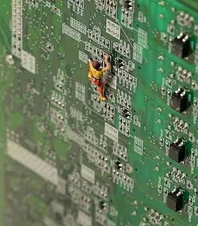
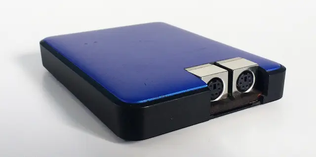

// FORMACIÓN Y DESARROLLO
Que comience el juego!
Lo importante es definir una dirección estratégica en lo alto, para poder determinar de que forma se puede avanzar en una dirección clara.
3 de mayo de 2018 · 1 minuto de lectura

Luego llego el diseño, sentarse a pensar cuales son todas las alternativas al alcance de la mano y no tanto, para lograr obtener un panorama completo de las posibilidades.
Elegida una estrategia, se busca mejorarla para lograr la eficiencia en el camino seleccionado.
Por último y primera, la base, las acciones que benefician al cliente, un lugar clave para armar el campo base de la travesía que se está por desarrollar. A fin de cuenta es quien te da la razón de la existencia. Para poder lograr esto, es necesario trabajar en la excelencia de la forma en la cual se trabaja.
Estudios relacionados

ForceBoard | Rendimiento deportivo
Evalúa el grado de desarrollo de los factores físicos de rendimiento en escalada deportiva.
Marzo 2017
Cargando 92,86%
Diez puntos para invertir y disponer del tiempo. El primero es conocer bien los objetivos y la tolerancia al riesgo.
Marzo 2017
Argencon 2016
Difundir y exponer a nivel nacional los resultados más recientes de las investigaciones y desarrollos en todas las ingenierías.
Junio 2016ForceBoard | Rendimiento deportivo
// EL SIGUIENTE PASO
TU PRODUCTO.
SU PRÓXIMA ETAPA.
Una primera conversación para entender el desafío y ver si puedo aportar valor.
↗ Hablemos de tu proyecto